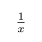

Packages
MakieTeX.jl
This package re-exports @typst_str and TypstString.
julia> using CairoMakie, MakieTeXjulia> f = Figure(; size = (100, 100));julia> LTeX(f[1, 1], TypstDocument(typst"$1 / x$"); scale = 5);julia> save("makie_tex.svg", f);
TypstJlyfish.jl
#set page(margin: 1em, height: auto, width: auto, fill: white)
#set text(16pt, font: "JuliaMono")
#import "@preview/jlyfish:0.1.0": *
#read-julia-output(json("typst_jlyfish.json"))
#jl-pkg("Typstry")
#jl(`using Typstry; typst"$1 / x$"`)
julia> using TypstJlyfishjulia> TypstJlyfish.compile("typst_jlyfish.typ"; evaluation_file = "typst_jlyfish.json", typst_compile_args = "--format=svg" )Activating new project at `/tmp/jlyfish-evalNu7Ze5` [ Info: Output written to file typst_jlyfish.json downloading @preview/jlyfish:0.1.0 2.7 KiB / 2.7 KiB (100 %) 2.7 KiB/s in 0s ETA: 0s downloading @preview/based:0.1.0 2.6 KiB / 2.6 KiB (100 %) 2.6 KiB/s in 0s ETA: 0s [ Info: Updating package dependencies. Updating registry at `~/.julia/registries/General.toml` Resolving package versions... Installed Typstry ─ v0.2.0 Updating `/tmp/jlyfish-evalNu7Ze5/Project.toml` [f0ed7684] + Typstry v0.2.0 Updating `/tmp/jlyfish-evalNu7Ze5/Manifest.toml` [692b3bcd] + JLLWrappers v1.5.0 [aea7be01] + PrecompileTools v1.2.1 [21216c6a] + Preferences v1.4.3 [f0ed7684] + Typstry v0.2.0 [458c3c95] + OpenSSL_jll v3.0.14+0 [eb4b1da6] + Typst_jll v0.11.1+0 [56f22d72] + Artifacts [ade2ca70] + Dates [8f399da3] + Libdl [de0858da] + Printf [fa267f1f] + TOML v1.0.3 [4ec0a83e] + Unicode Precompiling project... ✓ Typstry 1 dependency successfully precompiled in 4 seconds. 5 already precompiled. 1 dependency precompiled but a different version is currently loaded. Restart julia to access the new version [ Info: Evaluating `using Typstry; typst"$1 / x$"` ... [ Info: Output written to file typst_jlyfish.json [ Info: Compiling document... [ Info: Done.
